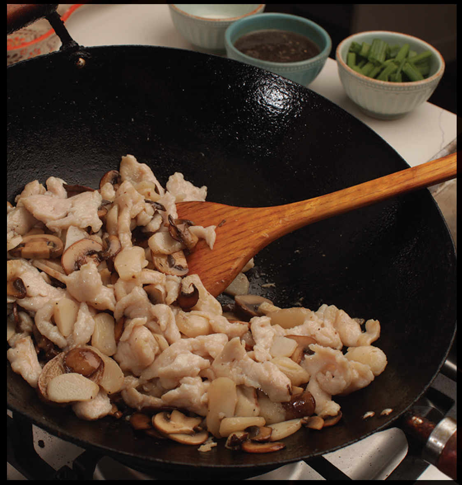

Velveting: The Secret to the Juiciest, Tenderest White Meat
One of the problems with stir-frying is that the intense heat necessary to keep vegetables crisp and keep meats from steaming can also cause lean cuts of meat like chicken, fish, or pork loin to dry out and turn tough or stringy. To prevent this, you need to create some sort of insulative buffer to protect your meat as it cooks, much in the same way that you might bread a chicken breast or batter a piece of lean fish before frying it.
Enter velveting, a technique that solves this problem and starts with marinating meat using a few specific ingredients:
•Egg whites provide a loose protein matrix that sets up around the meat, protecting it from coming in direct contact with the pan.
•Cornstarch simultaneously prevents the egg white proteins from setting up too firmly while also absorbing excess liquid from both inside (meat juices expelled during cooking) and out (sauces added to the stir-fry).
•A water-based liquid such as Shaoxing wine, stock, or soy sauce further dilutes the egg proteins while also adding flavor and color.

Once the meat has been coated in this mixture, you can simply stir-fry it, but it’s difficult to get the coating to actually stick evenly if you go straight into a hot wok. For the best results, it’s best to par-cook velveted meat so that the coating sets into a soft, ultrathin halo of gel that coats the meat. You can subsequently stir-fry it along with aromatics, vegetables, and sauces to finish cooking.
Traditionally this is done in hot oil, a process called “passing through.” If you peek into a Chinese restaurant kitchen that velvets its meat, you may see the cooks dunking their proteins into a deep fryer or a wok with a good pool of oil in it very briefly—just a matter of seconds—before subsequently stir-frying it. At home, you can accomplish this with an inch or so of oil in the bottom of your wok. When I oil-velvet, I pass the meat through the hot oil in batches, using a wire-mesh strainer to take the meat out as it cooks. I can then pour the oil off through a fine-mesh strainer into a pot that I keep on the stove. The oil can be used for stir-frying in the future.
If the prospect of heating up a cup or so of oil before stir-frying frightens you (there are so many people frightened of oil!), a friendlier process is water-velveting, a technique I learned from Shao Zhi Zhong, who was a contributor when I edited Serious Eats. The process is identical, but instead of passing velveted meat through a pool of oil, you simply blanch it for a few moments in boiling water. Tasted side by side, the two processes are distinguishable in a finished stir-fry, but both taste just fine, and both will produce meat that is significantly more tender and juicy than if it were stir-fried naked.